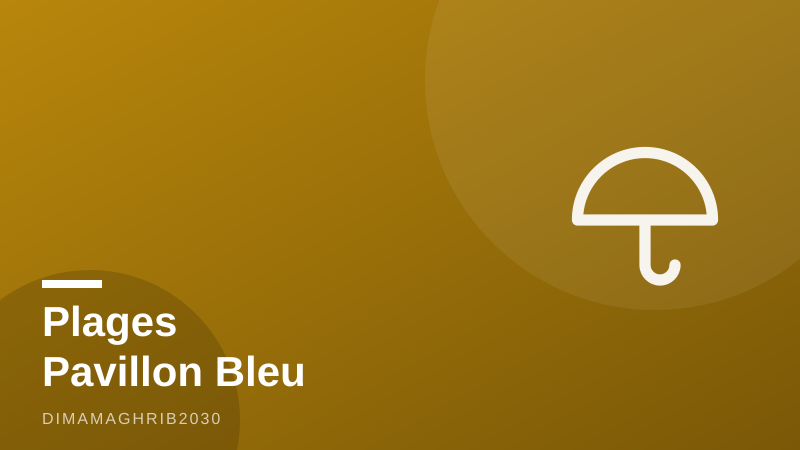

Pavillon Bleu 2026 : les plages où les Marocains se baignent vraiment (et celles qu'on évite) — guide d'un localMorocco's 2026 Blue Flag Beaches: A Local's Honest Guide to Where We Actually Swim

Chaque été, c'est le même rituel chez nous : quelqu'un partage la liste du Pavillon Bleu dans le groupe familial WhatsApp, et tout le monde commence à planifier. Cette année, la liste est historique. Selon Yabiladi, un record de 38 sites marocains ont décroché le label Pavillon Bleu pour l'été 2026 : 33 plages, 4 marinas et même un lac de montagne. Oui, un lac. Le Pavillon Bleu Maroc 2026 n'est plus juste une affaire de côte.
Mais laissez-moi vous dire un truc entre nous : ce label, décerné par la Fondation Mohammed VI pour la Protection de l'Environnement, veut vraiment dire quelque chose. Comme le rappelle LeSiteinfo, il repose sur quatre critères sérieux : qualité de l'eau, éducation environnementale, hygiène et sécurité, et gestion durable. Ce n'est pas un autocollant marketing. Quand une plage perd son label, on le remarque. Croyez-moi, on en parle au café.
Les cinq petites nouvelles qui affolent tout le monde
La vraie info de cette année, ce sont les cinq plages labellisées pour la première fois. D'après La Vie Éco, il s'agit d'Oualidia Grande Plage, Tamaris II à Nouaceur, Contrebandiers et Sable d'Or du côté de Skhirate-Témara, et Amsa près de Tétouan. La plage Oualidia, franchement, c'était une évidence : cette lagune est notre secret le moins bien gardé, avec ses huîtres et son eau calme parfaite pour les enfants. Le label va juste officialiser ce que les Casaouis savent depuis toujours — et malheureusement attirer encore plus de monde en août.
Amsa, c'est mon coup de cœur. La plage d'Amsa à Tétouan reste plus sauvage que Martil ou Cabo Negro, l'eau y est d'un bleu qu'on ne trouve nulle part ailleurs sur la Méditerranée marocaine. Allez-y vite, avant que tout le monde s'y mette.
Mes conseils de local, sans filtre
D'abord, les horaires. En juillet-août, arrivez avant 9h30 ou après 17h. Entre les deux, c'est la bataille pour le parking, et les « gardiens » improvisés vous demanderont 20 dirhams avec un sourire non négociable. Ensuite, les parasols : sur les plages propres labellisées comme Sable d'Or ou Contrebandiers, les loueurs sont mieux encadrés, mais négociez quand même le prix avant de vous asseoir. Jamais après.
Bladi.net signale qu'un classement parallèle des « plages les plus propres 2026 » circule massivement chez les Marocains ce mois de juillet. Prenez-le avec des pincettes : seul le label officiel garantit des analyses d'eau régulières. Une plage peut être belle sur Instagram et douteuse au microscope.
Alors, où se baigner cet été ?
Si vous cherchez les meilleures plages du Maroc pour l'été 2026, mon trio : Oualidia en semaine pour la famille, Amsa pour la tranquillité, et Contrebandiers si vous êtes sur l'axe Rabat-Casa et voulez éviter les plages bondées de la capitale. Évitez les plages urbaines non labellisées après les week-ends de grande affluence — je ne citerai personne, mais vous voyez très bien de quoi je parle. La mer est à nous tous ; la liste du Pavillon Bleu, c'est simplement la carte de ceux qui la traitent bien.
Every summer the same thing happens in my family WhatsApp group: someone shares the Pavillon Bleu list, and suddenly everyone is a beach expert. This year there's actually something to talk about. According to Yabiladi, a record 38 Moroccan sites earned the Blue Flag label for summer 2026 — 33 beaches, 4 marinas, and one mountain lake. Yes, a lake. The Blue Flag beaches Morocco conversation isn't just about the coast anymore.
Here's what I tell visiting friends: this label genuinely means something. It's awarded by the Fondation Mohammed VI pour la Protection de l'Environnement, and as LeSiteinfo explains, it rests on four real criteria — water quality, environmental education, hygiene and safety, and sustainable management. It's not a marketing sticker. When a beach loses its flag, we notice, and we talk about it over coffee.
The five newcomers everyone is rushing to
The real news this year is the five first-time beaches. La Vie Éco lists them: Oualidia Grande Plage, Tamaris II in Nouaceur, Contrebandiers and Sable d'Or near Skhirate-Témara, and Amsa outside Tétouan. Honestly, Oualidia earning its flag was overdue. That lagoon is our worst-kept secret — calm, shallow water perfect for kids, oysters pulled fresh from the water down the road. The label just makes official what every Casablanca family already knew. The downside: expect even bigger August crowds now.
Amsa is my personal favorite. It's still wilder than Martil or Cabo Negro, with a shade of blue you won't find anywhere else on our Mediterranean coast. If Amsa near Tétouan is on your list, go soon, before the rest of the country catches on.
Local tips nobody puts in brochures
First, timing. In July and August, arrive before 9:30am or after 5pm. In between, you'll fight for parking and meet the improvised "parking guardians" who'll ask for 20 dirhams with a smile that isn't really a question. Second, umbrellas: on certified beaches like Sable d'Or or Contrebandiers the renters are better regulated, but always agree on a price before you sit down. Never after — that's rule number one of any Morocco beach guide worth reading, and it's the most local tip I can give you.
One more thing. Bladi.net reports that a parallel "cleanest beaches 2026" ranking has been circulating like wildfire among Moroccans this July. Treat it with caution. Only the official label guarantees regular water testing; a beach can look stunning on Instagram and still fail a lab test. When in doubt, trust the flag, not the feed.
So where should you actually swim?
If you're hunting for the best beaches in Morocco for 2026, here's my honest shortlist: Oualidia on a weekday for families, Amsa for peace and that impossible blue, and Contrebandiers if you're on the Rabat-Casablanca corridor and want to skip the capital's packed city beaches. And avoid unlabeled urban beaches right after busy weekends — I won't name names, but if you know, you know. The sea belongs to all of us; the Blue Flag list is simply a map of the places that treat it right.